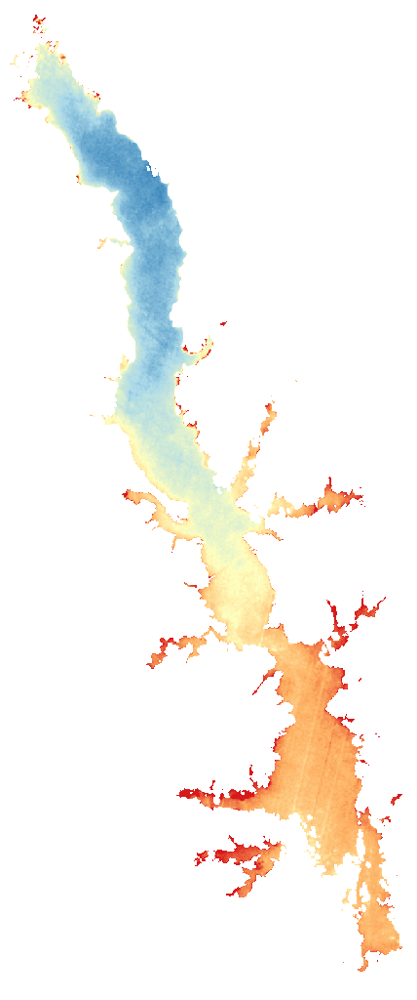

LakeScope › TX
Toledo Bend Reservoir today
Updated 2026-11-07 - Atlas Labs
Some algae possible, 68°F water, level steady, near normal, calm this morning.
Water level
167.74 ft
USGS gauge 08025350 - 2026-11-07
7-day trend: steady (+0.02 ft). Compared with normal for this date: +0.1 ft (same weeks, 2016-2025).
Water clarity and algae
Some algae possible Last clear view: over a week ago. 2 cloudy passes since.
Surface temperature
68°F
seen from space on 2026-11-04

Weather, next 3 days
| Day | Sky | High / low | Wind | Rain |
|---|---|---|---|---|
| Saturday | Partly Sunny | 72 / 49°F | 5 mph NE | 1% |
| Sunday | Partly Sunny | 69 / 51°F | 5 mph NE | 0% |
| Monday | Partly Sunny | 72 / 53°F | - mph | 1% |
Sunrise 06:35 - sunset 17:20 - Waning crescent. National Weather Service.
Get the LakeScope app: alerts and the 3-D view of Toledo Bend Reservoir